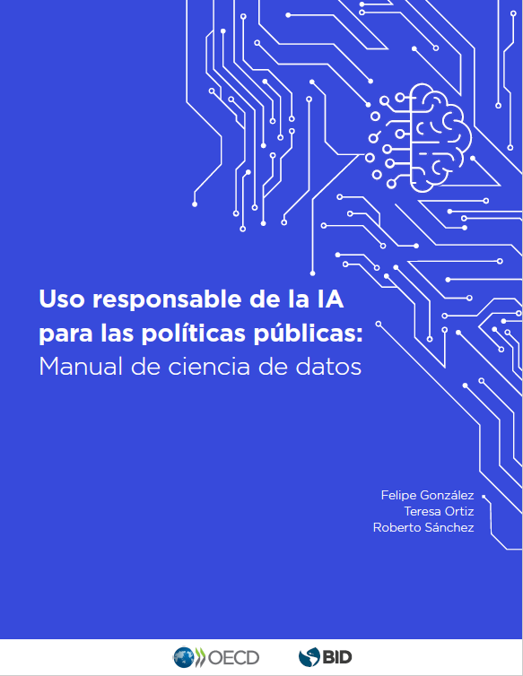

Uso responsable de la IA para las políticas públicas
Manual de ciencia de datos

Ilustración 0.1: Portada
Para consultar la versión en PDF haga click aquí.
Iniciativa fAIr LAC
El Banco Interamericano de Desarrollo (BID), en colaboración con socios y aliados estratégicos, lidera la iniciativa fAIr LAC mediante la cual se busca promover la adopción responsable de la Inteligencia Artificial (IA) y los sistemas de soporte de decisión para mejorar la prestación de servicios sociales y crear oportunidades de desarrollo en aras de atenuar la desigualdad social. Este manual es parte de un grupo de documentos y herramientas para equipos técnicos y responsables de la formulación de políticas públicas para guiarles en la mitigación de los retos de los sistemas de soporte de decisión y promover una adopción responsable de la IA (Cristina Pombo (2020)).
¿Por qué este manual?
A pesar de que existe un número importante de principios que buscan una IA ética, solo proporcionan una orientación de alto nivel sobre lo que debe o no hacerse en su desarrollo y existe muy poca claridad sobre cuáles son las mejores prácticas para ponerlas en funcionamiento (Jobin, Ienca, and Vayena 2019). El objetivo de este manual es proveer esas recomendaciones y buenas prácticas técnicas con el fin de evitar resultados contrarios (muchas veces inesperados) a los objetivos de los tomadores de decisiones. Esos fines son variados: pueden referirse a consecuencias no deseables desde el punto de vista de los tomadores de decisiones, desaprovechamiento de recursos debido a focalizaciones inadecuadas o cualquier otro objetivo que el tomador de decisiones esté buscando lograr. 1
¿Para quién es este manual?
Este manual está pensado para equipos técnicos trabajando en la aplicación de algoritmos de aprendizaje automático para políticas públicas. Sin embargo, todos los retos que cubre son comunes a cualquier aplicación de esta tecnología. Se asume que el lector cuenta con conocimientos básicos de estadística y programación, aunque cuando se nombran conceptos se incluyen descripciones breves y se comparte bibliografía adicional. El manual incluye cuadernillos de trabajo con varios ejemplos de los retos y soluciones explicadas. Se usan distintos tipos de modelos (lineales, basados en árboles y otros) y distintas implementaciones (R, Keras, Xgboost) para mostrar que estos problemas se presentan independientemente de la elección de herramientas particulares. Aunque los códigos y ejemplos se desarrollaron en R, todos los temas y metodologías aplicadas y descritas en este manual se pueden implementar en cualquier otro lenguaje de programación. 2
Banco Interamericano de Desarrollo (BID) – BID Lab
BID Lab es el laboratorio de innovación del Grupo BID. Allí se movilizan financiamiento, conocimiento y conexiones para catalizar la innovación orientada a la inclusión en América Latina y el Caribe. Para BID Lab, la innovación es una herramienta poderosa que puede transformar a la región creando oportunidades sin precedentes para las poblaciones en situación vulnerable por las condiciones económicas, sociales y ambientales en que se encuentran. https://bidlab.org/
Organización para la Cooperación y el Desarrollo Económico (OECD)
La OECD (por sus siglas en inglés) es una organización internacional que trabaja para construir mejores políticas para una vida mejor. Nuestro objetivo es elaborar políticas que fomenten la prosperidad, la igualdad, las oportunidades y el bienestar para todos. Junto con los gobiernos, los responsables políticos y los ciudadanos, trabajamos en el establecimiento de normas internacionales basadas en pruebas y en la búsqueda de soluciones a una serie de retos sociales, económicos y medioambientales. Un ejemplo de establecimiento de normas son los Principios de la OECD sobre Inteligencia Artificial (IA), que son los primeros principios de este tipo adoptados por los gobiernos. Estos principios promueven una IA innovadora y fiable que respete los derechos humanos y los valores democráticos. https://oecd.ai/en/ai-principles/
OECD - AI Policy Observatory
El Observatorio OECD.AI es un hub de políticas públicas sobre inteligencia artificial (IA). Ayuda a los países a fomentar, alimentar y supervisar el desarrollo y el uso de una IA confiable. Utilizado por los responsables políticos y otras partes interesadas en más de 170 países, OECD.AI se ha convertido en un centro reconocido para la evidencia, el debate y la orientación orientada a la política, con el apoyo de fuertes asociaciones con actores de todos los grupos de interés y con otras organizaciones internacionales. Ofrece un análisis basado en evidencias sobre la IA. OECD.AI es una fuente única de datos y visualizaciones en tiempo real sobre la evolución de la IA. También contiene una base de datos de políticas de IA de más de 60 países que permite a los gobiernos comparar las respuestas políticas y desarrollar buenas prácticas. OECD.AI mide nuestro progreso colectivo hacia una IA digna de confianza; su red de expertas y expertos y el blog AI Wonk facilitan los debates colaborativos sobre políticas de IA.
Se puede acceder a otros trabajos de la OECD relacionados con la aplicación específica de la IA en el sector público a través del Observatorio de la Innovación del Sector Público (OPSI) de la OECD (https://oecd-opsi.org/), que ofrece una visión general de las medidas de IA aplicadas en el sector público, incluidas las relativas a la elaboración de políticas de gobernanza de la IA y el diseño y la prestación de servicios públicos.
Agradecimientos
Por su tiempo y valiosos aportes, expresamos un agradecimiento especial a Cristina Pombo, coordinadora de la iniciativa fAIr LAC del BID y al Prof. Ricardo Baeza-Yates, Director de Ciencia de Datos en Northeastern University, Campus de Silicon Valley, e integrante del Grupo de Expertos y Expertas de fAIr LAC. Los autores también agradecen por las contribuciones recibidas de Karine Perset, administradora del OECD.AI, y de Luis Aranda, analista de políticas del OECD.AI.
Agradecemos igualmente el apoyo prestado y los comentarios recibidos de Luis Tejerina, Elena Arias Ortiz, Natalia González Alarcón, Tetsuro Narita, Constanza Gómez-Mont, Daniel Korn, Ulises Cortés, José Antonio Guridi Bustos, César Rosales y Sofía Trejo.